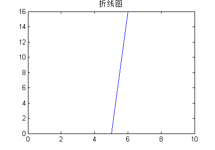

iPhone系列
iPhone系列手机配置变化过程：
| 手机型号 |
发布日期 |
RAM |
ROM |
屏幕尺寸 |
PPI |
后置摄像头 |
前置摄像头 |
CPU位数 |
CPU核心数 |
CPU频率 |
手机厚度 |
电池容量 |
代号 |
| iPhone |
2007.6 |
？ |
？ |
3.5 |
91 |
200W |
？ |
32 |
1 |
416M |
11.6 |
？ |
1 |
| iPhone 3G |
2008.7 |
？ |
？ |
3.5 |
91 |
200W |
？ |
32 |
1 |
412M |
12.3 |
1150 |
2 |
| iPhone 3GS |
2009.6 |
？ |
？ |
3.5 |
165 |
300W |
？ |
32 |
1 |
660M |
12.3 |
1400 |
3 |
| iPhone 4 |
2010.6 |
？ |
？ |
3.5 |
330 |
500W |
30W |
32 |
1 |
1.0G |
9.3 |
1420 |
4 |
| iPhone 4S |
2013 |
512M |
？ |
3.5 |
330 |
800W |
30W |
32 |
2 |
800M |
9.3 |
1420 |
5 |
| iPhone 5 |
2012 |
1G |
16G |
4 |
326 |
800W |
120W |
32 |
2 |
1G |
7.6 |
1440 |
6 |
| iPhone 5C |
2013 |
1G |
16G |
4 |
326 |
800W |
120W |
32 |
2 |
1G |
8.97 |
1510 |
7 |
| iPhone 5S |
2013 |
1G |
16G |
4 |
326 |
800W |
120W |
32 |
2 |
1.3G |
7.6 |
1560 |
8 |
| iPhone 6 |
2014 |
1G |
16G |
4.7 |
326 |
800W |
120W |
64 |
2 |
1.4G |
6.9 |
1810 |
9 |
| iPhone 6plus |
2014 |
1G |
16G |
5.5 |
401 |
800W |
120W |
64 |
2 |
1.4G |
7.1 |
2915 |
10 |
1. iPhone RAM发展过程与趋势
总结：由折线图可以看出iPhone系列手机RAM的从iPhone3GS的256M增长到iPhone5的1G后不变。在拟合曲线图中，从1、2、3次拟合曲线综合来预测，iPhone下一、二代产品的RAM分别为1G，2 G。
2. iPhone ROM发展过程与趋势
|  |
 |
总结：由以上曲线可以看出，iPhone的ROM是跳跃式增长，后面几代都是16G为主，估计以后将产生以32G、64G为主的iPhone 7或iPhone 8。
3. iPhone 屏幕尺寸发展过程与趋势
总结：由折线图看出iPhone系列手机手机屏幕尺寸从最初的3.5经历4代发展到4寸，再发展到4.7寸，增长变化不显著。从拟合结果来看其大致为上升曲线经过综合分析可以预测下一、二代手机尺寸为4.7、4.7。
4. iPhone PPI发展过程与趋势
总结：由折线图可以看出PPI曲线整体是在上升的。从第4代产品之后就已经超过了视网膜级别要求的312，由第2代至第4代上升斜率比较大。在拟合曲线图中，二次曲线说明PPI的变化会受到一定限制（如科技加工工艺等方面），不会像1、3次曲线描述的增长，从其预测第6,、7代旗舰产品的PPI比1、2次拟合曲线降低，大约为400、450。
5. iPhone 后置摄像头发展过程与趋势
总结：由折线图看出主摄像头的像素总体上呈上升趋势，由第一代的200万增长到了第5代的800万，后保持不变。拟合图中通过三条曲线来综合分析，预测值应该比由1次拟合曲线值偏低，由此预测其下一、二代主摄像头的像素为800万，1300万。
6. iPhone 前置摄像头发展过程与趋势
总结：
由折线图看出前置摄像头先是保持在30万左右，然后提高到120万，保持不变，呈现出阶梯上升趋势。由拟合结果，预测值应该比1、2次曲线值偏低，由此预测下一、二代产品的前置摄像头像素分别为120万，150万。
7. iPhone CPU位数发展过程与趋势
总结：由折线图来看到iphone6手机才开始采用64位CPU处理器，之前都是用的32位的。从拟合结果来看，预测下一、二代的位数为64、64.
8. iPhone CPU核心数发展过程与趋势
总结：由折线图来看到iphone4S手机才开始采用双核CPU处理器，之前都是用的单核的。从拟合结果来看，预测下一、二代的核心数为2、4.
9. iPhone CPU频率发展过程与趋势
总结： 由折线图来看CPU频率由iPhone一代416M提高到了的iPhone6的1.7GHZ，总体上呈现处上升趋势。从拟合结果来看，三条曲线都比较接近，综合分析预测下一、二代处理器的频率分别为1.6GHZ、1.8GHZ。
10. iPhone 厚度发展过程与趋势
总结：从折线图看总体为下降趋势，反映出了手机越来越薄的变化规律。从拟合结果来看，2、3次拟合曲线说明厚度也有一定的阈值（PS：就目前及未来的技术不可能把手机做成一张纸一样薄吧），由此结合一次拟合曲线预测第6、7代产品的厚度大约为7.8mm、7.5mm。
11. iPhone 电池容量发展过程与趋势
总结：从折线图来看电池容量由iPhone3G的1150增长到了iPhone6mAh的1810mAh，逐代递加，其中从iPhone5到iPhone6这两代产品的电池容量增长较多。由曲线拟合结果综合分析可预测下一、二代产品的电池容量分别为2000mAh、2100mAh。